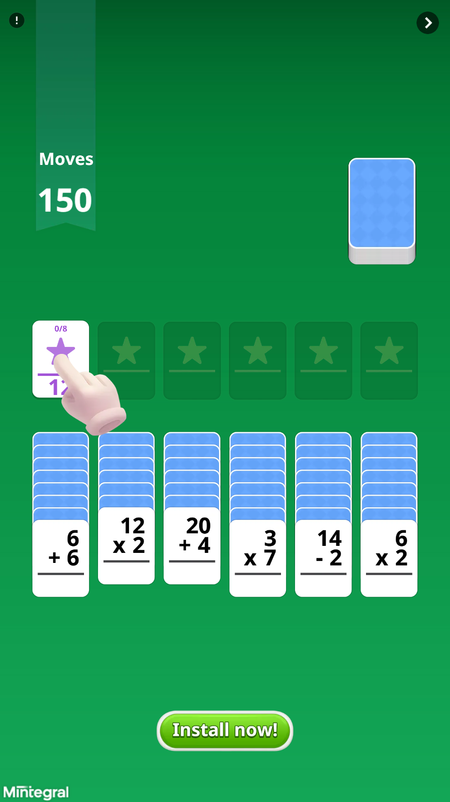
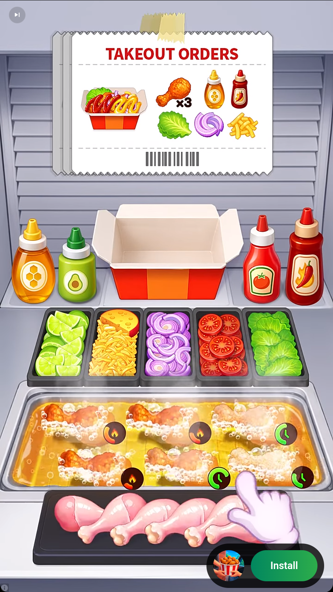
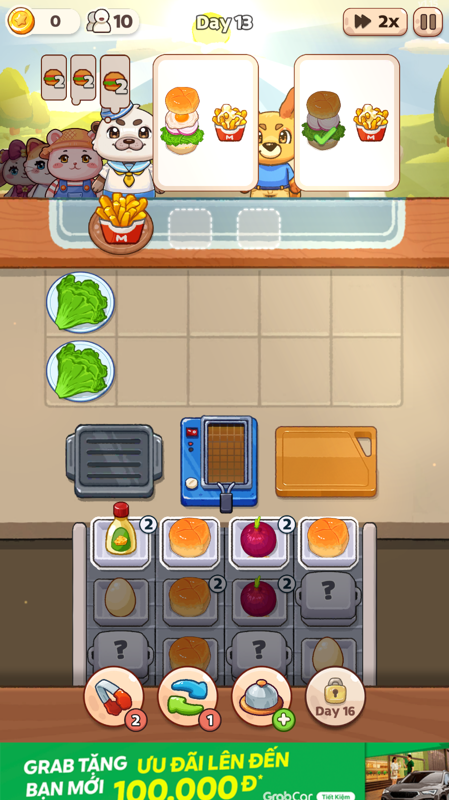
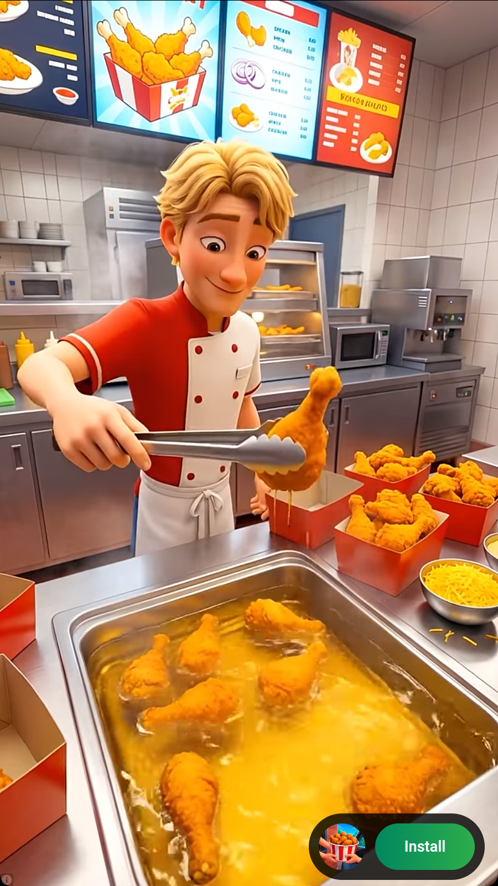

Quảng cáo & phân nhóm người chơi
Ai thấy quảng cáo nào, bao nhiêu lần, do cấu hình nào quyết định; và module phân nhóm (Segment) mới của 1.15 thật sự thay đổi được gì.
Bài gom toàn bộ luật quảng cáo: 3 profile theo chiến dịch AppsFlyer, mạng quảng cáo đang chạy, 6 chỗ quảng cáo thưởng, cổng và giới hạn của interstitial, popup Remove Ads, rồi module _GAME.Segment (5 trục phân nhóm). Có bảng đối chiếu 5 inter thật trong playtest 16/11. Đọc khoảng 12 phút; phần bán Remove Ads xem thêm Luồng IAP.
r1plugin_segment_*. Kết quả là người chơi organic gặp một inter sau mỗi màn thắng từ Day 15 (5 inter trong 28 phút), 2 / 5 là playable không có nút đóng. Module Segment hiện chỉ đo và gắn nhãn.- ✅ Giá trị thật: lấy thẳng từ code, config server thật, save hoặc ảnh chụp khi chơi.
- 🧪 Ví dụ minh họa: con số đầu vào giả định để thấy cơ chế chạy; cách tính trong ví dụ là cách tính thật trong code.
- Tên kỹ thuật (class, method, key) để trong ngoặc hoặc ở dòng bằng chứng, để tra code khi cần.
Tóm tắt nhanh
- Ba profile quảng cáo chọn theo tên chiến dịch AppsFlyer. Không khớp từ khoá nào thì dùng BLD (mặc định, coi như organic).Ví dụ ✅ BLD: inter từ Day 15, cap 180 s; AdsROAS: từ Day 10, cap 120 s, có inter khi thua từ Day 30; IAP: từ Day 50, cap 350 s, không banner.
- Máy test chạy profile BLD. Mọi dấu hiệu khớp BLD và không khớp hai profile còn lại.Ví dụ ✅ Banner thấy ở Day 13 (BLD ≥ 11), inter đầu ở Day 15, màn thắng chỉ một nút (BLD tắt nút nhân gem), popup Remove Ads sau inter (AdsROAS / IAP đặt 0).
- Inter chạy sau mỗi màn thắng, không bao giờ sau màn thua (BLD). Cap 180 giây không chặn được vì một màn dài 6–8 phút.Ví dụ ✅ 20:37, 20:43, 20:51, 20:58, 21:04: 5 màn thắng Day 15–19 → 5 inter, khoảng cách 6–8 phút.
- Nút “100 gem” ở Day 15 không mở quảng cáo thưởng. 100 gem là thưởng thắng Super Hard; quảng cáo hiện ra là inter thứ nhất (đúng mốc Day 15).Ví dụ ✅ Bấm lúc 20:37:06,97 → bộ đếm inter của Segment (đọc
AdsManager.CountInterShownInSession) ghi 20:37:08; save có đúng 5 mốc inter cho 5 màn thắng. - Popup Remove Ads đếm theo phiên. Sau inter đầu của mỗi lần mở app, rồi mỗi 5 inter.Ví dụ ✅ Popup 20:38 (phiên 1) và 20:53 (phiên 2, sau khi phải tắt app vì quảng cáo kẹt).
- Segment phân 5 trục nhưng chỉ trục chi tiêu tác động quảng cáo. Server đặt được “tối đa N inter / 24 giờ” và cap giây theo bậc NP, T1–T4.Ví dụ ✅ Live 16/11 không có
r1plugin_segment_interlimit/_intercap→ không giới hạn gì thêm; người chơi test ở nhóm NP, Core, Normal, Light. - Quảng cáo kẹt là rủi ro lớn nhất. Playable AppLovin không có nút X, BACK vô hiệu.Ví dụ ✅ Day 16 (> 110 giây) và Day 19 (> 60 giây): phải tắt app.
Ví dụ xuyên suốt: 5 interstitial trong 28 phút (Day 15 → Day 19, 16/11/2026)
✅ Playtest MuMu, giờ máy (+07), tài khoản NP, profile BLD (suy ra). Giờ bấm lấy từ actions.log; giờ inter lấy từ save R1 (SegmentDbModel.interShows). Người chơi không mua gì, không bấm Install.
| Lúc | Màn / phiên | Quảng cáo | Đóng thế nào | Sau đó |
|---|---|---|---|---|
| 20:37:07 → 20:37:08 | Thắng Day 15 Super Hard; phiên 1, inter #1 | Mintegral playable “Math Solitaire” (activity MBRewardVideoActivity, Mintegral dùng chung cho cả inter) | Bấm “>” bỏ qua, nút X hiện sau khoảng 12 giây | Home: popup Remove Ads 8,99 $ (inter đầu của phiên). Gem 440 → 540 (thưởng thắng 100) |
| 20:43:41 → 20:43:42 | Thắng Day 16; phiên 1, inter #2 | AppLovin: video rồi playable “TAKEOUT ORDERS” | Không có X sau hơn 110 giây, BACK vô hiệu → tắt app 20:46 | Không popup (inter #2 của phiên). Mở lại app: tiến độ còn, sang Day 17 |
| 20:51:57 → 20:51:58 | Thắng Day 17; phiên 2, inter #1 | Mintegral video “My Supermarket!” (đếm 3, X sau ~5 giây) rồi playable | X sau ~4 giây ở playable | Home: popup Remove Ads lần 2 vì bộ đếm phiên đã reset |
| 20:58:35 → 20:58:36 | Thắng Day 18; phiên 2, inter #2 | Unity Ads playable “Pixelora Flow” | Nút skip sau ~12 giây | Không popup |
| 21:04:39 → 21:04:40 | Thắng Day 19; phiên 2, inter #3 | AppLovin playable “TAKEOUT ORDERS” | Không có X sau hơn 60 giây → tắt app | Phiên 3: Home Day 20 có Starter Pack |
| 21:12 | Thua Hard Day 20 | Không có inter (BLD interLoseFromLv = -1) | - | Segment ghi level_lose; bộ đếm vẫn 5 inter / 24 giờ |
| 21:17 | Thoát giữa Day 20 | Không có inter (BLD interQuitMidgameFromLv = -1) | - | Segment không ghi gì cho lần thoát |
Nhịp thật: 1 inter mỗi 6–8 phút chơi ngay từ màn Super Hard đầu tiên. Cap 180 s không chặn lần nào. 2 / 5 quảng cáo buộc người chơi tắt app, và chính việc tắt app làm popup Remove Ads bật lại. 🧪 Nếu server đặt r1plugin_segment_interlimit = {"NP": 3}, inter #4 và #5 sẽ bị chặn với lý do seg_daily_limit.







Ảnh chụp minh họa (5)
Ảnh chụp từ game thật. Bấm ảnh để phóng to, phím ← → để chuyển ảnh.





Luồng hoạt động (7 bước)
Tóm lại: thắng → bấm nút nhận → kiểm 6 cổng của profile → hỏi Segment có chặn không → hiện inter qua MAX → đếm inter trong phiên → về Home: còn “lượt” thì popup Remove Ads
- 1Chọn profileClientLúc khởi động, AppsFlyer trả tên chiến dịch (
af_campaign_name). Từ khoá “BLD”, “AdsROAS / ROAS”, “IAP” chọn profile; không khớp thì BLD.Ví dụ ✅ads_campaign_config= {defaultProfile: BLD, routes: BLD, AdsROAS (AdsROAS, ROAS), IAP}.AdsManager.ResolveCampaignProfile - 2Chọn mạngServer
ads_network_configquyết định mediation và từng định dạng. Live: AppLovin MAX cho rewarded, inter, banner; tắt MREC, app open, app switch.Ví dụ ✅ Live 16/11: {mediation 1, reward 2, inters 2, mrec 0, banner 2, appOpen 0, appSwitch 0, maxUseBackfill 0}.AdsManager (đọc ads_network_config) - 3Thắng màn, bấm nút nhậnPlayerKhông có nút nhân thưởng bằng video ở BLD và IAP (
isWinBonusRewardDisabled= 1). Sau khi cộng gem, game gọi inter.Ví dụ ✅ Day 15: nút “100” = thưởng Super Hard, không phải quảng cáo thưởng.UIEndGameWin.OnClickNext; LevelPlayLoadAndSetupControl.ShowInterOnLeaveEndGame
Thắng màn, bấm nút nhận - 4Kiểm cổng interClientĐủ Day (
interFromLv), đủ số màn trong phiên, đủ màn từ inter trước, hết cap thời gian, chưa mua IAP trong phiên (BLD), không có lý do chặn ngoài.Ví dụ ✅ Day 14 thắng: chưa đủ mốc 15 → không inter. Day 15 thắng: đủ → inter.AdsManager.IsPassInterRules - 5Hỏi SegmentClientLý do chặn ngoài do Segment đăng ký: đủ số inter trong 24 giờ của bậc chi tiêu thì chặn với lý do
seg_daily_limit.Ví dụ ✅ Live không đặt limit → không bao giờ chặn.SegmentInterRules.BlockReason - 6Hiện inter và đếmClientMAX hiện quảng cáo; ghi mốc cho phép lần sau (now + cap); tăng đếm inter trong phiên; Segment ghi thời điểm vào save (tối đa 200 mốc).Ví dụ ✅ 5 mốc trong save: 20:37:08, 20:43:42, 20:51:58, 20:58:36, 21:04:40.
AdsManager.ShowInter; SegmentInterCounter.Poll - 7Về Home: popup Remove AdsClientLượt popup: lần đầu khi số inter trong phiên ≥
removeAdsPopupAfterInter, sau đó khi thêm ≥removeAdsPopupEveryInterinter.Ví dụ ✅ BLD 1 / 5 → popup sau inter #1, #6, #11 của mỗi phiên.AdsManager.TryConsumeRemoveAdsPopupTurn; HomeControllerCookOrder.TryAutoShowPopupRemoveAdsVề Home: popup Remove Ads
Nhánh & ngoại lệ
| Khi | Thì | Ví dụ | Bằng chứng |
|---|---|---|---|
| Người chơi đến từ chiến dịch AdsROAS | Inter sớm hơn (Day 10), dày hơn (cap 120 s), có inter khi thua từ Day 30, banner từ Day 2, tối đa 1 rewarded trong màn, có nút nhân gem thắng bằng video, không popup Remove Ads. | 🧪 Cùng nhịp 6–8 phút / màn: thêm inter ở Day 10–14 và sau các lần thua từ Day 30. | ads_campaign_adsroas |
| Người chơi đến từ chiến dịch IAP | Inter từ Day 50, cap 350 s, không banner, không popup Remove Ads. | 🧪 Người chơi này đi hết Day 1–49 không gặp inter nào. | ads_campaign_iap |
| Vừa mua IAP trong phiên (BLD) | Inter bị chặn tới hết phiên. | 🧪 Mua Starter lúc 21:06 → Day 20 thắng không có inter. | ads_campaign_bld.isBlockInterAfterIap = 1 |
| Đã mua No Ads (hoặc được tặng) | Tắt inter, banner, app open; rewarded giữ; trục quảng cáo của Segment thành NoAdsOwner. | 🧪 Daily Rewards vẫn 4 nút video. | AdsManager.UpdateOnRemoveAds; SegmentClassifier.AdOf |
| Bấm nút video khi mất mạng / quảng cáo chưa tải | Toast “cần internet” hoặc “quảng cáo chưa sẵn sàng”, không cộng thưởng. | 🧪 Bấm +1 heart FREE khi offline → toast, tim không đổi. | SceneMainUI.ShowAdsReward |
| Server đặt limit theo bậc chi tiêu | Đếm inter trong cửa sổ trượt 24 giờ (đồng bộ cả lên save server); vượt thì chặn và log seg_inter_block một lần mỗi đợt. | 🧪 {"NP": 6, "T1": 3, "default": 6}: người chưa mua tối đa 6 inter / 24 giờ, người đã mua ít nhất một gói tối đa 3. | SegmentInterConfig.LimitFor; SegmentInterCounter |
1. Ba profile chiến dịch (RC mặc định, đang chạy)
Tóm lại: tên chiến dịch AppsFlyer → từ khoá → profile → luật inter / banner / rewarded / popup bán
Giá trị chung khi profile để 0 (ads_inter_config): passLvRq 10, showAfterNumPlay 0, capNumLv 0, capTimeVidRw 120 (suy luận: cap sau một video thưởng), capTimeDefault 180, lv [30] → capByLv [120], interQuitMidgame 30, interQuitLoseGame 30. Banner chung ads_banner_config.passLvRq = 10. Rewarded chung ads_reward_config = {useMulticall 0, maxPerLv 1}.
| Tham số | BLD (mặc định) | AdsROAS | IAP | Ví dụ |
|---|---|---|---|---|
| interFromLv / interFromLvIos | 15 / 15 | 10 / 10 | 50 / 50 | ✅ BLD: inter đầu sau thắng Day 15 |
| interCapTime (giây) | 180 | 120 | 350 | ✅ Khoảng cách thật 6–8 phút, cap không chặn |
| interCapLv → interCapByLv | [30] → [120] | [] → [] | [] → [] | 🧪 BLD từ Day 30 cap còn 120 giây |
| interLoseFromLv | -1 (tắt) | 30 | 0 (dùng chung 30) | ✅ Thua Day 15, 20 không có inter |
| interQuitMidgameFromLv | -1 (tắt) | 0 (dùng chung 30) | 0 (dùng chung 30) | ✅ Thoát Day 20 không có inter |
| isBlockInterAfterIap | 1 | 0 | 0 | 🧪 BLD mua IAP → hết inter trong phiên |
| isBannerDisabled / bannerFromLv | 0 / 11 | 0 / 2 | 1 / 0 | ✅ Banner ở Day 13 |
| rewardInGameMaxPerLv | -1 (không đặt, suy luận) | 1 | -1 | 🧪 AdsROAS: xem 1 video cứu màn rồi không còn nút video trong màn đó |
| isWinBonusRewardDisabled | 1 | 0 | 1 | ✅ Màn thắng chỉ một nút nhận |
| removeAdsPopupAfterInter / EveryInter | 1 / 5 | 0 / 0 | 0 / 0 | ✅ Popup sau inter #1 mỗi phiên |
2. Sáu chỗ quảng cáo thưởng
Tóm lại: mọi nút video đi qua SceneMainUI.ShowAdsReward → AdsManager.ShowVideo

| Chỗ đặt | Thưởng | Giới hạn | Ví dụ | Số liệu do |
|---|---|---|---|---|
| Daily Rewards (4 ô tuần tự) | 100 gem, 150 gem, tim vô hạn 15 phút, 200 gem | Mỗi ô 1 lần / ngày, phải nhận ô trên trước | ✅ Day 13: 4 nút “Free” có biểu tượng video | Client (prefab) |
| More Lives | +1 tim | Không thấy giới hạn trong code | ✅ “+1 heart FREE” ở 20:24 | Client |
| Cứu màn | Cứu miễn phí | maxAds 99; điều kiện hiện nút chưa đọc ra | ✅ Không thấy nút video ở 4 popup cứu | Client |
| Booster hết | 1 lượt booster (xem xong không dùng được vẫn giữ) | maxAds 99; số video trong màn < giới hạn profile | Chưa bấm (luật an toàn) | Client |
| Tăng tốc 2x | +8 phút | canUseAds = 1 | Chưa gặp (quỹ còn 263 giây) | Client |
| Nhân gem thắng | Gem cộng thêm (bonusMuls 120 / 150 / 200 %, suy luận) | Từ level 3; tắt ở BLD và IAP | ✅ Không có nút này trong phiên | Client |
3. Banner
- Chỉ trong màn chơi, từ khi thắng đủ
bannerFromLvmàn. BLD 11, AdsROAS 2, IAP tắt.Ví dụ ✅ Day 13: banner Binance, rồi Grab, Shopee / Meta ở đáy màn. - Không có banner ở Home cho profile mặc định. Log chặn có câu “not on Home for campaign”.Ví dụ ✅ Ảnh Home Day 13–20 không có banner.
- Có bộ theo dõi banner tự chuyển hướng (BannerGuard), chỉ ghi analytics, không chặn; key bật không có trong RC mặc định.Ví dụ 🧪 Người chơi chạm nhầm banner rồi mua IAP ngay sau → log
ad_banner_redirect_suspectkèm mạng và creative.
4. Module Segment: 5 trục phân nhóm
Tóm lại: boot / thắng / thua / mua IAP / quay lại app → phân loại lại → lưu history + user property seg_* → (trục chi tiêu) đặt limit / cap inter
- Lần thoát giữa màn không được tính là thua. Struggling chỉ bật ở lần thua thật thứ 3, không phải lúc thoát.Ví dụ ✅ Day 15: thua 20:04, thua 20:10, thoát 20:18 (không đổi nhóm), thua 20:23 → Struggling. Thoát Day 20 lúc 21:17 cũng không ghi gì (suy luận:
countQuitAsLose= false). - Bộ đếm inter đi theo tài khoản. Lưu trong save R1 và gộp với save server, đổi máy không reset cửa sổ 24 giờ.Ví dụ ✅ Save giữ tối đa 200 mốc inter và 30 dòng lịch sử đổi nhóm.
- Server ép được nhóm chi tiêu để thử nghiệm. Key
r1plugin_segment_force_spend(NP / T1–T4).Ví dụ 🧪 Ép cả nhóm test thành T2 để xem hành vi quảng cáo của người đã trả tiền mà không cần mua thật. - Không có lớp đẩy nhóm sang AppLovin MAX. Phân nhóm không ảnh hưởng tới mạng quảng cáo hay giá thầu.Ví dụ ✅ Không thấy lớp
MaxSegment*trong 1.15.
| Trục | Giá trị | Ngưỡng mặc định | Dùng để | Ví dụ |
|---|---|---|---|---|
| Chi tiêu (spend) | NP, T1, T2, T3, T4 | Chưa mua → NP; còn lại so tổng USD (hoặc gói đắt nhất) với 4 mốc tierUsd (chưa đọc được) | Limit + cap inter; chọn bảng thưởng Streak nếu RC bật | ✅ Save: NP, ltvUsd 0, purchaseCount 0 |
| Gần đây mua (recency) | None, Active, Cooling, Lapsed | ≤ 14 ngày từ lần mua cuối → Active; ≥ 30 → Lapsed | Chỉ gắn nhãn | ✅ None (chưa mua) |
| Vòng đời (lifecycle) | New, Core, Returning | < 3 ngày từ lần mở đầu → New; vắng ≥ 7 ngày → Returning trong 3 ngày | Chỉ gắn nhãn | ✅ Vắng 12 ngày → Returning 13/11 13:33 → Core 16/11 19:12 |
| Kỹ năng (struggle) | Normal, Struggling, Strong | Thua liên tiếp ≥ 3 → Struggling; ≥ 10 ván gần đây, thắng ≥ 85 % (cửa sổ 20) và không thua liên tiếp → Strong | Chỉ gắn nhãn | ✅ 20:04:44 strong → normal; 20:23:43 normal → struggling; 20:36:44 → normal |
| Quảng cáo (ad) | Light, Watcher, NoAdsOwner | Có No Ads → NoAdsOwner; ≥ 3 video thưởng / ngày hoạt động → Watcher | Chỉ gắn nhãn | ✅ Light (không xem video tự nguyện) |
5. Key server của Segment: có gì, live dùng gì
| Key | Dạng | Tác dụng | Live 16/11 | Ví dụ |
|---|---|---|---|---|
| r1plugin_segment_enable | bool (mặc định true) | Công tắc tổng | Không có → bật | 🧪 false → game chạy như 1.11 |
| r1plugin_segment_config | JSON ngưỡng | Ghi đè mốc USD, số ngày, tỉ lệ thắng… | Không có → mặc định | 🧪 {"tierUsd": [x, y, z, w]} phải là 4 số tăng dần |
| r1plugin_segment_interlimit | JSON {bậc: số} | Tối đa N inter / 24 giờ | Không có → {} | 🧪 {"NP": 6, "T1": 3} |
| r1plugin_segment_intercap | JSON {bậc: giây} | Cap giây giữa hai inter theo bậc | Không có → {} | 🧪 {"T1": 600}: người đã mua ít nhất 10 phút mới có inter tiếp |
| r1plugin_segment_force_spend | NP / T1–T4 | Ép bậc chi tiêu | Không có | - |
| dreamy_streak_reward_config | 0 / 1 | 1 = chọn bảng thưởng Streak theo bậc chi tiêu | Không có → bảng Colony | ✅ Save Streak: rewardTable = 3 (Colony) |
6. Câu hỏi “nút 100 gem ở Day 15” đã được giải
Tóm lại: 100 gem = thưởng thắng Super Hard; quảng cáo = inter thứ nhất
- Số gem khớp thưởng thắng, không khớp thưởng video.
rwWinByDifficulty= [20, 60, 100]; Day 15 là Super Hard → 100.Ví dụ ✅ 440 → 540 gem; các màn thường sau đó đều +20. - Bộ đếm inter ghi đúng thời điểm. Segment đọc
CountInterShownInSessioncủaAdsManager; mốc đầu tiên trùng giây bấm nút.Ví dụ ✅ Bấm 20:37:06,97, mốc inter 20:37:08; tổng 5 mốc = 5 màn thắng Day 15–19. - Activity
MBRewardVideoActivitykhông chứng minh là quảng cáo thưởng. Mintegral dùng nó cho cả inter.Ví dụ ✅ Inter Day 17 cũng chạy trongMBRewardVideoActivity. - Popup Remove Ads ngay sau đó là dấu hiệu inter. Popup chỉ tính lượt theo số inter.Ví dụ ✅ 20:38:08 popup Remove Ads, đúng sau inter #1.
isWinBonusRewardDisabled = 1 của BLD. Màn thắng ở BLD không có quảng cáo thưởng.7. Giới hạn dữ liệu
- Profile quảng cáo của máy test không đọc trực tiếp (tên chiến dịch AppsFlyer); BLD là suy luận từ hành vi.
- Mốc USD
tierUsdvà giá trịcountQuitAsLosenằm trong dữ liệu tĩnh chưa đọc được. - Ý nghĩa
{}của limit / cap suy luận là “không giới hạn thêm”; cách gộp cap theo bậc với cap của profile (lấy lớn hơn hay thay thế) chưa đọc kỹ. - Điều kiện hiện nút video trong popup cứu (
canUseAds) và ý nghĩarewardInGameMaxPerLv= -1 chưa đọc ra. - Chỉ có một save, một buổi chơi; tần suất inter ở nhóm khác cần dữ liệu analytics.
Số liệu chính
| Chỉ số | Giá trị | Số liệu do | Nguồn |
|---|---|---|---|
| Mạng quảng cáo (live) | AppLovin MAX cho rewarded / inter / banner; MREC, app open tắt | Server | ads_network_config (frc_activate_20261116) |
| Inter BLD | từ Day 15, cap 180 s (120 s từ Day 30), không khi thua / thoát | Client | ads_campaign_bld |
| Banner BLD | từ 11 màn thắng, chỉ trong màn | Client | ads_campaign_bld.bannerFromLv |
| Popup Remove Ads BLD | sau inter #1, #6, #11… mỗi phiên | Client | AdsManager.TryConsumeRemoveAdsPopupTurn |
| Inter thật trong phiên | 5 trong 28 phút (1 / 6–8 phút) | Đo trên máy | SegmentDbModel.interShows |
| Quảng cáo không có nút đóng | 2 / 5 | Đo trên máy | RESULTS_LIVE mục 5 |
| Số trục Segment | 5 (spend, recency, lifecycle, struggle, ad) | Client | SegmentClassifier |
| Ngưỡng Segment | Active ≤ 14 / Lapsed ≥ 30 ngày; New < 3 ngày; Returning khi vắng ≥ 7 ngày (giữ 3); Struggling 3 thua; Strong ≥ 85 % / 20 ván; Watcher ≥ 3 video / ngày | Client | SegmentConfig |
| Key r1plugin_segment_* trên server | 0 | Server | frc_activate_20261116.json |
Đánh giá
Thang 1–5 (với tiêu chí rủi ro, 5 = rủi ro cao). Trung bình: 2.7.
| Tiêu chí | Điểm | Nhận xét |
|---|---|---|
| Kiến trúc tách theo nguồn người chơi | 4/5 | Ba profile đủ tham số, chọn tự động theo chiến dịch; đổi không cần bản mới. |
| Mật độ inter cho người organic | 2/5 | Một inter mỗi màn thắng ngay từ màn Super Hard đầu tiên; cap 180 s vô dụng với màn 6–8 phút. |
| Chất lượng trải nghiệm quảng cáo | 1/5 | 2 / 5 playable không có nút đóng, phải tắt app. |
| Quảng cáo thưởng | 3/5 | 6 chỗ đặt, giữ lượt khi video không dùng được; nhưng nút cứu bằng video và nhân gem thắng đang không hiện với BLD. |
| Phân nhóm (Segment) | 3/5 | Thiết kế tốt (5 trục, history, đồng bộ server, ép nhóm để test) nhưng live chưa dùng đòn bẩy nào. |
| Bán Remove Ads | 3/5 | Đặt đúng sau lúc bị làm phiền; nhưng đếm theo phiên nên lặp lại với người hay phải tắt app. |
- Profile theo chiến dịch cho phép người mua bằng ROAS / IAP nhận mật độ quảng cáo khác organic.
- Không có inter khi thua / thoát ở BLD: không đánh vào lúc người chơi đang buồn.
- Chặn inter sau khi mua IAP trong phiên.
- Segment ghi lịch sử đổi nhóm và gắn user property
seg_*, đủ để phân tích theo nhóm trên Firebase / BigQuery.
- Không có giới hạn tổng inter theo ngày đang chạy.
- Trục kỹ năng, vòng đời, quảng cáo của Segment chưa điều khiển gì (không offer cho Struggling, không quà cho Returning).
- Không có cơ chế phát hiện quảng cáo kẹt (không có nút đóng) để bù thưởng hay chặn creative.
- Người chơi tắt app vì playable không đóng được có thể gỡ game ngay ở Day 16–19.
- Inter dày từ Day 15 trùng đúng màn Super Hard đầu tiên, nơi người chơi đã thua nhiều lần: cộng dồn cảm giác tiêu cực.
- Đổi
ads_campaign_*trên server ảnh hưởng toàn bộ người chơi của profile đó, không có A/B test sẵn trong 17 key live.
- Đặt
r1plugin_segment_interlimitvà_intercaptheo bậc. 🧪 Ví dụ NP: tối đa 8 inter / 24 giờ, T1+: tối đa 3 và cap 600 giây; đo giữ chân D1 / D7 trước và sau. - Bỏ qua inter cho màn vừa thắng sau ≥ 2 lần thua liên tiếp (trục Struggling đã có), hoặc dời mốc BLD sang Day 16 để màn Super Hard đầu tiên không kèm inter.
- Chặn creative playable không có nút đóng ở tầng MAX (báo mạng / chặn nhà quảng cáo) và đền quà nhỏ khi app bị tắt trong lúc inter đang chạy.
- Chỉ hiện popup Remove Ads một lần mỗi 24 giờ thay vì mỗi phiên (lưu mốc ra save, dùng
capShowOffer1 800 s thật sự). - Bật lại nút cứu bằng video cho lần cứu đầu ở nhóm NP để đổi một phần inter bắt buộc thành rewarded tự nguyện.
Liên quan
Quảng cáo (rewarded, inter, banner, app open) Phân nhóm người chơi & giới hạn quảng cáo (Segment) Gói ưu đãi (starter, booster pack, remove ads) Cửa hàng & IAP Luồng màn: vào, thắng, thua Cứu màn (Save Me) Tim (mạng) Quà hằng ngày (Daily Rewards) Tăng tốc x2 Booster trong màn Chuỗi thắng Dreamy (Dreamy Streak / Win Streak) Cấu hình từ xa & level author A/B Màn Home & thứ tự popup 📊 Luồng sale & event (cơ bản) 📊 Sale & event: phân tích sâu 📊 Luồng IAP: 28 gói, giá trị và đường mua 📊 Lộ trình mở tính năng và lịch sự kiện theo Day
Nguồn đã đọc
_analysis/code/decompiled/IapAdsSystemR1/IapAdsSystem.AdsManager.c (IsPassInterRules, TryConsumeRemoveAdsPopupTurn, IsWinBonusRewardAllowed)_analysis/code/stubs/IapAdsSystemR1 AdsManager (field 0xAC `_CountInterShownInSession_k__BackingField`)_analysis/code/decompiled/R1Plugins/_GAME.Segment.*.c (SegmentClassifier, SegmentInterRules, SegmentInterCounter)_analysis/live/fp_20261116/save_end/R1/lL7FHktJKVN0r3Nl (SegmentDbModel giải bằng Tools/decode/s2_save_tool.py)_analysis/live/fp_20261116/RESULTS_LIVE.md + actions.logData/remote_config/frc_defaults_115.json (ads_campaign_*, ads_inter_config, ads_reward_config, ads_banner_config)Data/remote_config/frc_activate_20261116.json (17 key, không có r1plugin_segment_*)